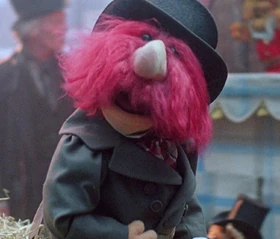

Mr. Bitte first appeared in The Muppet Christmas Carol where he played a horse carriage driver in the opening song entitled "Scrooge."
Mr. Bitte turned up next as a pirate in Muppet Treasure Island, and sang a solo line in the song "Cabin Fever."
